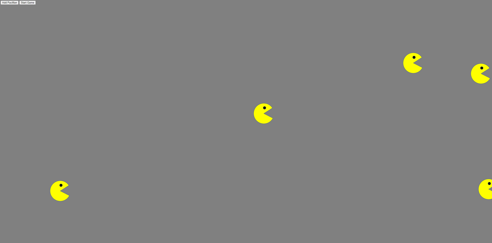

This is an Exercise to show you how to create an point to track the pointer when your mice moving around the active browser.

Do you ever wonder how to show the route from a point to another? especially when you building up your own website? without asking help from google map? Why not click on the Demo button to check it out. Or you may click on the Code Button to have a "clearer" picture

This is sample to guide you into world of DOM. If you would like to find out more why not clink on the code button.
If you want to build the similar 'walkthrough' for Hanoi game or want to create your own Hanoi game. you may refer to my code to get some idea.